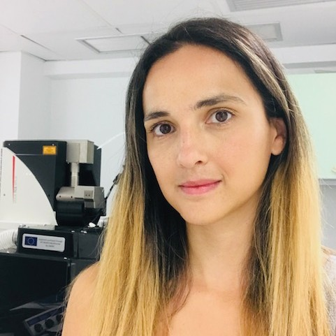

Vasiliki Kyrargyri PhD
My main scientific research focuses on the study of the functions of the CNS in normal and pathological conditions, mainly in the context of neuroimmunology and neurological diseases. Using experimental models, transgenic animals, confocal and two-photon microscopy, molecular and immunological techniques, bioinformatics and behavioral animal models, I study cell-specific functions of the CNS to identify molecular mechanisms and specialized molecular targets with clinical relevance and/or therapeutic potential against neurodegenerative and other neurological disorders. In my PhD and postdoctoral years I have specialized in the study of microglia, the resident immune cells of the brain, in health and disease.
I currently working as independent researcher at the Hellenic Pasteur Institute after being elected for a junior faculty research position. My plan is to continue studying microglia in the context of disease, with infectious diseases and neurodevelopmental psychiatric disorders being my most important targets for future investigation.
-
04/2009 – 02/2015 [PhD in Neuroimmunology].
National & Kapodistrian University of Athens. Medical School, Greece in collaboration with the laboratory of Molecular Genetics, Hellenic Pasteur Institute. -
09/2002 – 01/2008: [BSc in Biology].
National & Kapodistrian University of Athens. Department of Biology.
Education
-
12/2021 – 02/2023
Postdoctoral Research Associate, Department of Immunology, Laboratory of Molecular Genetics, Hellenic Pasteur Institute, Athens, Greece. Topic: Protective roles of microglia and their dynamics in neuroinflammation. Funding source: Nostos Foundation.
-
09/2018 – 11/21
H.F.R.I. Postdoctoral fellow, Department of Immunology, Hellenic Pasteur Institute, Athens, Greece. Topic: Microglia-driven pathology and altered brain surveillance in demyelination. Funding source: Hellenic Foundation for Research and Innovation (H.F.R.I.).
-
05/2015 – 02/18
Postdoctoral Research Associate, Department of Neuroscience, Physiology and Pharmacology, University College London (UCL), United Kingdom. Topic: Microglial dynamics in the healthy brain and role of pericytes in Alzheimer’s disease. Supervisor: Prof. David Attwell.
Post-doctoral Research
-
04/2009 – 02/2015
PhD in Neuroimmunology, Medical School, National & Kapodistrian University of Athens in collaboration with the Laboratory of Molecular Genetics at the Hellenic Pasteur Institute. Title: The role of NF-κB transcription factor in physiology of neurons and CNS disorders. Supervisor: Lesley Probert.
-
03/2013 – 03/2014
Visiting Scientist, Department of Neurosciences, Pablo de Olavide University, Seville, Spain. Training in in vivo electrophysiology and behavioral tests. Supervisor: Jose Maria Delgado.
-
08/2010 – 11/2010
Visiting Scientist, Department of Neuroscience, Physiology and Pharmacology, University College London (UCL), United Kingdom. Training in calcium imaging in brain slices. Supervisor: Prof. David Attwell.
-
02/2009 – 05/2009
Visiting Scientist, Egas Moniz Research Center, Medical School, Lisbon, Portugal. Training in ex vivo electrophysiology in brain slices. Supervisor: Ana Maria Sebastiao.
Research training (PhD or equivalent)
-
01/2021 – present
Teaching Immunology at the postgraduate program ‘Applications of biology in Medicine’ of the National & Kapodistrian University of Athens.
-
03/2018 – present
Organizing the Neuroimmunology course of the Masters of Neurosciences of the National & Kapodistrian University of Athens, and teaching ‘Microglia in health and disease’.
Teaching
-
2022
Awarded (first rank) with a postdoctoral scholarship and a research fund (5.000 euro annual) by Nostos Foundation to perform independent research at the Hellenic Pasteur Institute.
-
2018
Awarded with a research fund (180.000 euro) by the Hellenic Foundation for Research and Innovation (H.F.R.I.) to run a 3-year postdoctoral research project (Act 1156) as independent principal investigator.
-
2014
Travel award to attend the 12th International Society for Neuroimmunology Congress in Mainz, Germany.
-
2014
Travel award to attend the Brain Conference ‘Controlling Neurons, Cirquits and Behaviour’ in Denmark.
-
2013
One-year scholarship for a research visit at the Department of Neurosciences (Head Prof. Jose Maria Delgado), Pablo de Olavide University, Spain, awarded by Theodorou Theochari Kotsika Foundation.
-
2011
European Union scholarship (COST-STSM-BM0603-NEURINFNET) for a 3-month research visit at the department of European (Head Prof. David Attwell), UCL, London.
-
2009
European Union scholarship (COST-STSM-B30-04392-NEREPLAS) for a 3-month research visit at the department of Medicine (Head Prof. Ana Maria Sebastiao), Egas Moniz research center, Lisbon, Portugal.
honours
-
Microglia-driven pathology and altered brain surveillance in demyelination and neuroinflammation
Microglia are brain parenchyma-resident macrophages with various functions in health and disease. They are highly motile cells that constantly extend and retract their processes to perform brain surveillance, an homeostatic function by which they scan the tissue for possible infections, tissue damage and other pathological insults to resolve them. In pathology, they change their morphology and functions and they may have both beneficial and detrimental roles, depending on the disease context. We wish to understand how brain microglia respond to demyelinating insults and how their behaviour changes in recovery. To do so we developed a novel histopathological analysis approach in 3D and a cell-based analysis tool (https://github.com/VKyrargyri/MicroApp) that when applied in the cuprizone model revealed region- and disease- dependent changes in microglial dynamics in the brain grey matter during demyelination and remyelination (17). We now use similar approaches with the aim to unravel sensitive changes in microglial dynamics during neuroinflammation in the EAE model.
-
Brain resident microglia versus other tissue macrophages in MS models
The brain resident macrophages, which are the parenchymal microglia, the perivascular, meningeal and choroid plexus macrophages, have common cell origin with macrophages in the peripheral tissues. As a result, they share common molecular signatures making it challenging to differentiate their functions in neuroinflammatory diseases in which peripheral macrophages invade into the CNS. To deal with this, we employ constitutive knockout and tamoxifen-inducible gene-targeting approaches, immunological techniques, genetics and bioinformatics and currently seek to clarify the specific role of the brain resident microglial NF-κB molecular pathway versus other tissue macrophages in EAE
-
Dr Lesley Probert, Athens, Hellenic Pasteur Institute
-
Dr Dimitra Thomaidou, Athens, Hellenic Pasteur Institute
-
Prof. David Attwell, London, UCL
-
Prof. Jose Maria Delgado, Seville, Pablo de Olavide University
-
Prof. Ana Maria Sebastia, Lisbon, Egas Moniz research centre
Research collaborators
-
2021
Roufagalas, I., Avloniti, M., Fortosi, A., Xingi, E., Thomaidou, D., Probert, L., &
Kyrargyri, V. (2021).
Novel cell-based analysis reveals region-dependent changes in microglial dynamics in
grey matter in a
cuprizone model of demyelination. Neurobiology of Disease, 157, 105449.
https://doi.org/10.1016/j.nbd.2021.105449 -
2020 Kyrargyri V, Madry C, Rifat A, Arancibia-Carcamo IL, Jones SP, Chan VTT, Xu Y, Robaye B, Attwell D. P2Y13 receptors regulate microglial morphology, surveillance, and resting levels of inteleukin 1β release. Glia, 68(2):328-344
https://doi.org/10.1002/glia.23719 -
2019 Kyrargyri V, Attwell D, Jolivet RB, Madry C. Analysis of Signaling Mechanisms Regulating Microglial Process Movement. Methods Mol Biol, 2034:191-205.
https://doi.org/10.1007/978-1-4939-9658-2_14 -
2019 Nortley R, Korte N, Izquierdo P, Hirunpattarasilp C, Mishra A, Jaunmunktane Z, Kyrargyri V, Pfeiffer T, Khennouf L, Madry C, Gong H, Richard-Loendt A, Huang W, Saito T, Saido TC, Brandner S, Sethi H, Attwell D. Amyloid β oligomers constrict human capillaries in Alzheimer’s disease via signalling to pericytes. Science, 19;365(6450).
https://doi.org/10.1126/science.aav9518 -
2018 Papazian I., Kyrargyri V., Evangelidou M., Probert L. Mesenchymal stem cell protection of neurons against glutamate excitotoxicity involves reduction of NMDA-triggered calcium responses and surface GluR1, and is partly mediated by TNF. Int J Mol Sci., 25;19(3).
https://doi.org/10.3390/ijms19030651 -
2018 Madry C, Arancibia-Carcamo IL*, Kyrargyri V*, Chan VTT, Hamilton NB, Attwell D. Effects of the ecto-ATPase apyrase on microglial ramification and surveillance reflect cell depolarization, not ATP depletion. PNAS, 13:115(7)E1608-E1617. * Equal contribution as 1st author
https://doi.org/10.1073/pnas.1715354115 -
2018 Madry C*, Kyrargyri V*, Arancibia-Carcamo IL, Jolivet R, Kohsaka S, Bryan RM, Attwell D. Microglial Ramification, Surveillance, and interleukin-1β release are regulated by the two pore domain K+ channel THIK-1. Neuron. Jan17;97(2):299-312. * Equal contribution as 2nd author
https://doi.org/10.1016/j.neuron.2017.12.002 -
2015 Kyrargyri V., Vega Flores G., Gruart A., Delgado JM., Probert L. Differential contributions of microglial and neuronal IKKβ to synaptic plasticity and associative learning in alert behaving mice. GLIA, 63(4):549-66.
https://doi.org/10.1002/glia.22756 -
2012 Voulgari-Kokota A, Fairless R, Karamita M, Kyrargyri V, Tseveleki V, Evangelidou M, Delorme B, Charbord P, Diem R, Probert L. Mesenchymal stem cells protect CNS neurons against glutamate excitotoxicity by inhibiting glutamate receptor expression and function. Exp Neurol, 236(1):161-70.
https://doi.org/10.1016/j.expneurol.2012.04.011